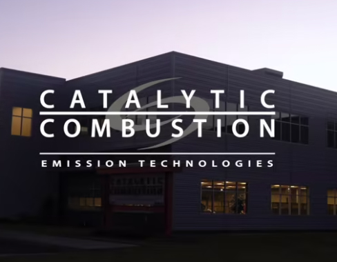
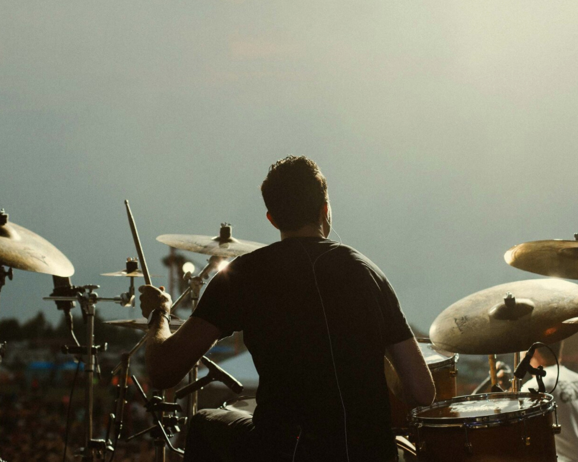

Other Projects

Catalytic Combustion
For this project director Jonny Stoll contracted me to photograph images that can be used inside-side of various sales documents, websites and internal presentations for Catalytic. As a small crew, I also worked with cinematographer Nick Houchin on building the lighting set ups he needed to tell this growing companies story via video.

The Music Industry
In 2014 my life would change forever. I jumped in a van, left my home town and went against the norm of college to pursue a long and challenging career as a Tour Photographer. What started as a love for music turned into a career that took me around the world photographing live music. I have been blessed to have worked for The Wrecks, Bon Iver, Nothing But Thieves, Chris Kroeze, All Time Low, SWMRS, July Talk, Mainland, Night Riots, Waldemar, Nick Anderson, Jenny Lewis, Idle Empress, TYSM, Sean Rowe, Switchfoot, Silent Planet, The Maine, Cancer Bats, The Millenium, Arms For Elephants, Blue Swans, AXEL, Whalehouse, Grayson Dewolfe, Hope Country, Conveyer, Darkness Divided, Harbor and Home, Phinehas, Sleep Signals, Matty Mullens (Memphis May fire), Austin Nivarel, Sonshine Music Festival, Eaux Claires, Blue OX Festival, HM Magazine, The AP Awards, and many more artist who have used my images in their EPK kits.